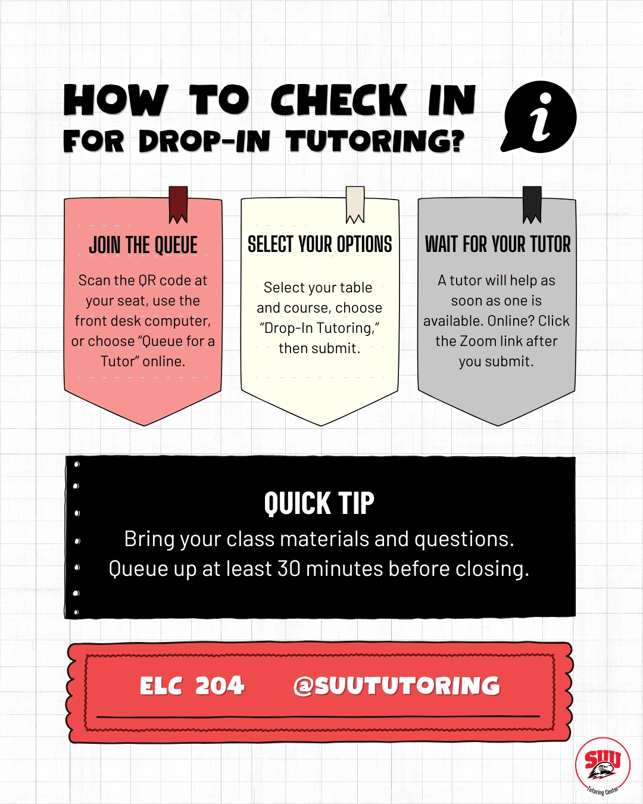
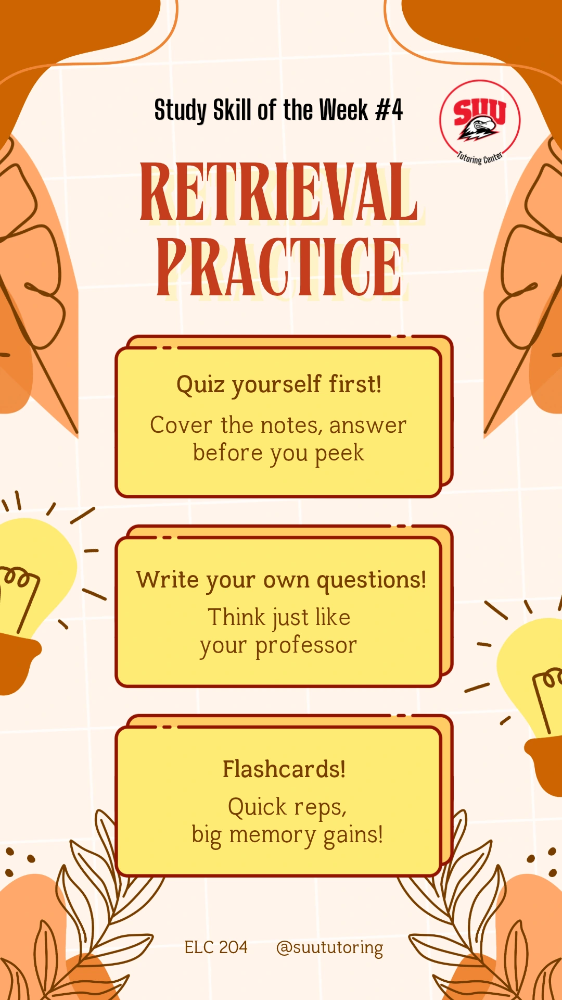
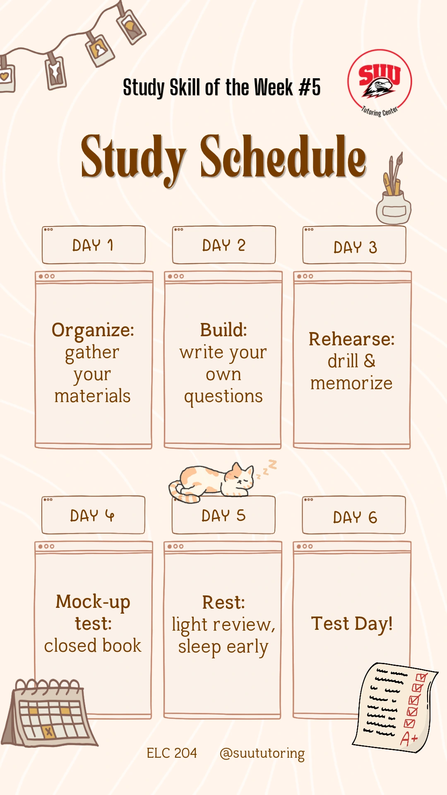
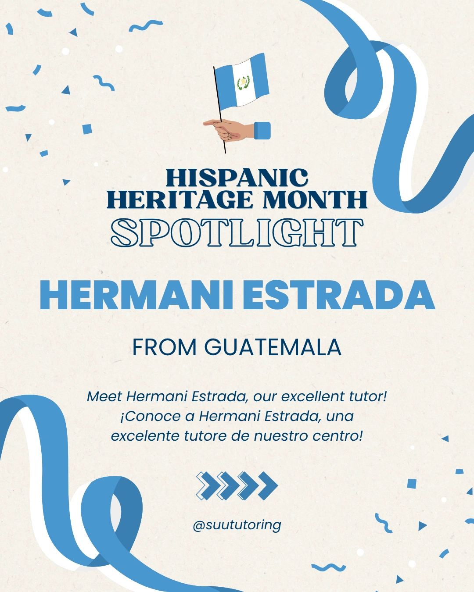
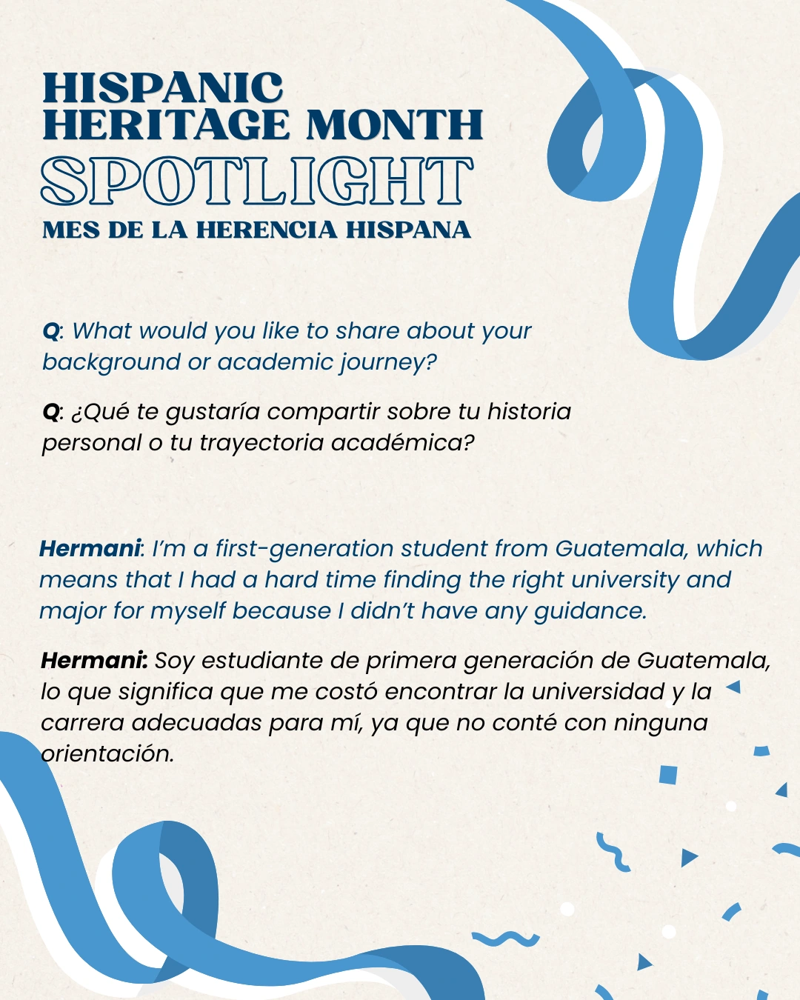
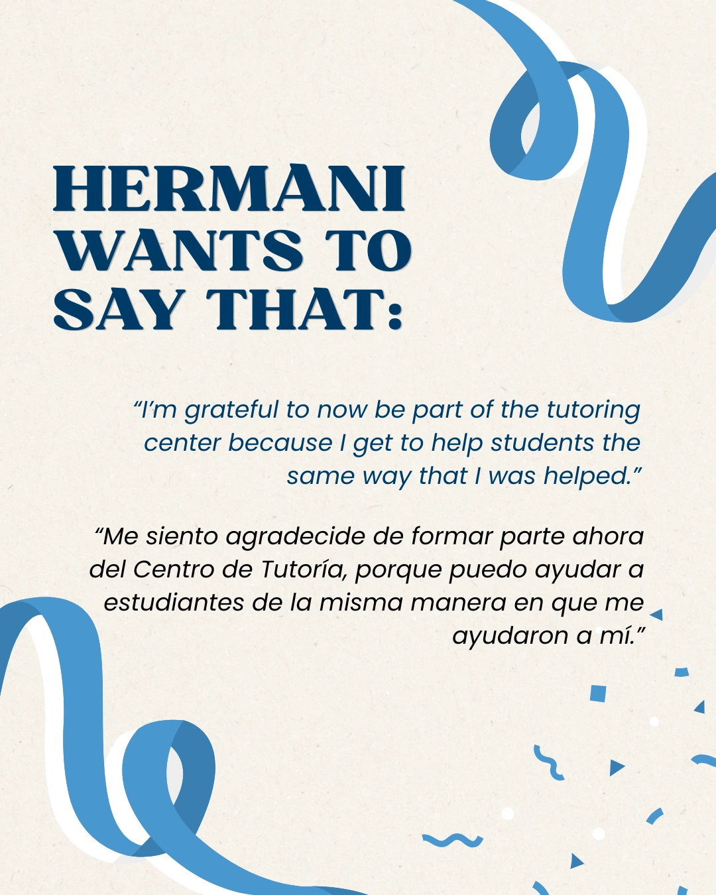

Selected Visual Work
Visual Work
Posters, social content, and visual stories for campus, culture, and music.
SUU Tutoring Center
Selected posters, study-skills stories, and a bilingual Hispanic Heritage Month spotlight. Click any image to see the full design.
Making tutoring approachable.
A direct invitation and a visual guide to drop-in tutoring.



Study Skill of the Week
Two story-format designs that turn study advice into small, practical steps.




Hispanic Heritage Month
Three selected slides from an English–Spanish tutor spotlight, connected by blue ribbons and a paper-textured background.






More visual work